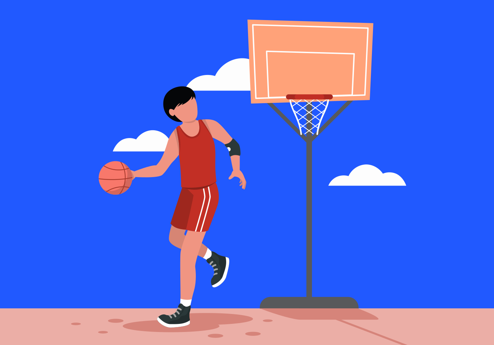

<section class="p-set-introduction">

  <!--START IMAGE-->
  
  <!--END IMAGE-->

  <!--START TEXTS-->
  <div class="p-set-introduction__bottom">

    <h1 class="p-set-introduction__title t-dark-blue t-title">Instructions à exécuter</h1>

    <h2 class="p-set-introduction__text t-dark-blue t-common">
      Pour paramétrer vos capteurs il faut... cras mattis consectetur purus sit amet fermentum. Sed posuere consectetur est at lobortis. Etiam porta sem malesuada magna mollis euismod.
    </h2>

    <a class="p-set-introduction__button a-button a-button--full" [routerLink]="'/set'">
      Go !
    </a>

  </div>
  <!--END TEXTS-->

</section>
